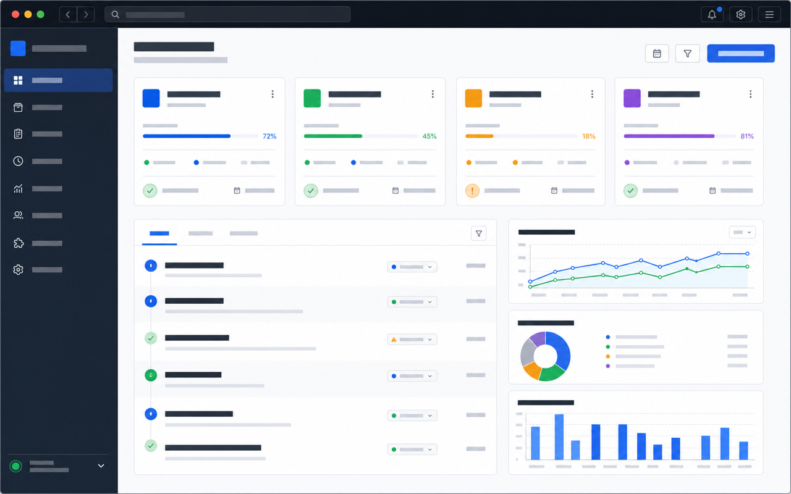

macOS
Universal app bundle packaged as a disk image.
macOS DMG
Local-first project operations
Track every Get Shit Done project from one desktop dashboard with milestone progress, session activity, native tray status, and quiet update controls.
Cautious script install
curl -fsSL https://3rdprints.github.io/gsd-dashboard/install.sh | sh
The script detects OS and architecture, shows the selected artifact, and prompts before downloading.
Universal app bundle packaged as a disk image.
macOS DMGUse the MSI for managed installs or the EXE for the NSIS installer path.
Windows MSIPrefer the package format for your distribution family; AppImage is the portable fallback.
Linux DEBPrefer signed release artifacts for daily use. The installer verifies SHA-256 checksums before opening or installing downloads; use the release assets to inspect signatures and checksums manually.
cargo install gsd-dashboard
cargo install gsd-dashboard installs the binary without a native app bundle, auto-update support, or normal macOS Gatekeeper trust. Prefer the native installer for daily use.
Source bundle keeps release source and pinned dependency metadata together for source builds.
Updater manifest is the stable path used by the desktop updater.